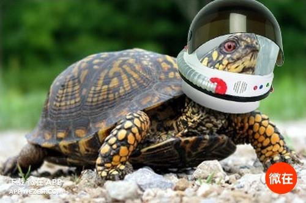

烏龜用屁股呼吸
介紹：946(綽號)
太空龜照:

用屁股呼吸緣由：：
- 一些烏龜屁股的部位長有滑囊，滑囊可以舒張泄殖腔從水中獲得氧氣。
- +12氧氣頭盔、+12打氣滑肛(O2套裝)
- 狂94%
- 2002年，Toni E. Priest和Craig E. Franklin在对费兹洛河龟的进一步研究中发现，
费兹洛河龟把用屁股吸氧的能力提升到了一个令龟无法企及的境界。
普通啮龟通过泄殖腔所吸收的氧气含量只占其总氧气摄入量的4%，而费兹洛河龟就显得有点出类拔萃了
，它的泄殖腔吸氧量占总量的41%，也就是说它获取的近一半的氧气来自于屁股！
HP：40000
MP：3000
每秒回(血量)/每秒回(魔力)：5000/30